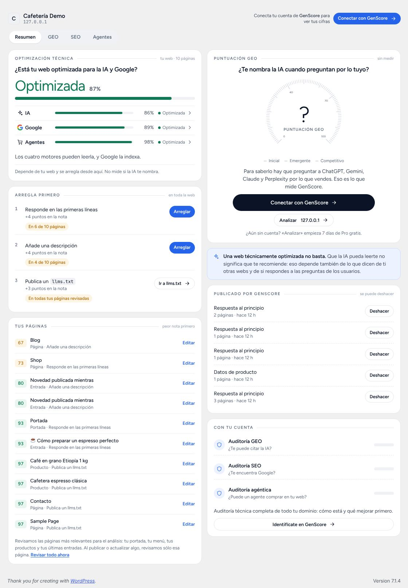
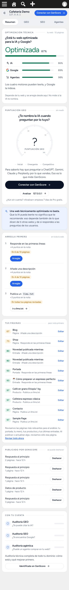
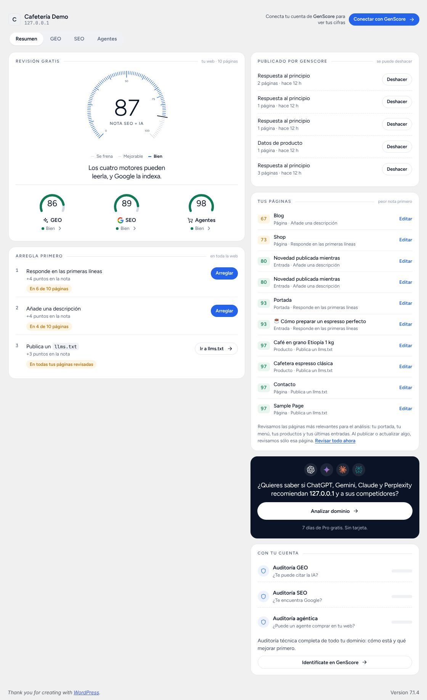
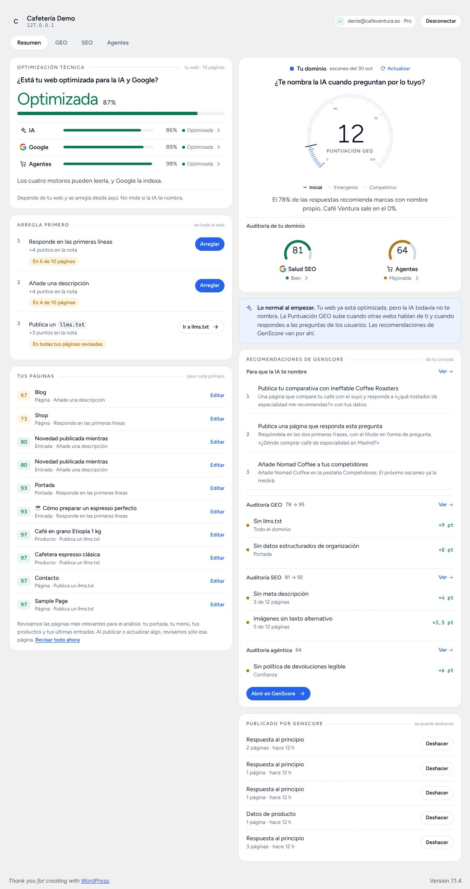
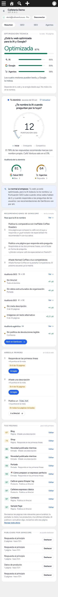

Capturas del plugin real (versión 1.2.0 en preparación) en mi WordPress de prueba. Los datos de la cuenta son ficticios: Puntuación GEO 12 y la web optimizada al 87%. La web se mide como «Optimización técnica», con una barra y un estado. El único medidor es la Puntuación GEO. Con sesión, se añaden las recomendaciones de la consola: el plan, la Auditoría GEO, la Auditoría SEO y la auditoría agéntica.
Sin sesión (nueva)
El cambio importante. Hoy solo se ve el 87 en un medidor. Ahora la Puntuación GEO sale como «?, sin medir», con «Conectar con GenScore» y «Analizar dominio». Debajo va tu frase: «Una web técnicamente optimizada no basta…».
Escritorio · 1280

Móvil · 390

Cómo es hoy sin sesión
Hoy · escritorio

Hoy · móvil
Con sesión (nueva)
Hay dos tarjetas arriba, cada una con su pregunta. A la izquierda, la optimización técnica de la web en barra. A la derecha, la Puntuación GEO es el medidor grande, y la Salud SEO y los Agentes del dominio van debajo como «Auditoría de tu dominio». Después viene «Recomendaciones de GenScore», con el plan para que la IA te nombre y lo que más resta en las auditorías GEO, SEO y agéntica, cada bloque con su «Ver» a la consola. En móvil el orden es: optimización, Puntuación GEO, frase, recomendaciones y después «Arregla primero».
Escritorio · 1280

Móvil · 390

Con sesión (actual, sin cambios)
Esta es la UX de hoy. El 87 de «Nota SEO + IA» es el número más grande de la pantalla, y el 12 aparece pequeño a la derecha. Con sesión el 12 al menos se ve, así que se puede mantener. Aun así, el 87 sigue leyéndose como la nota principal.